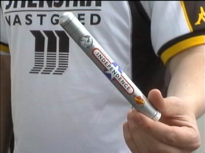
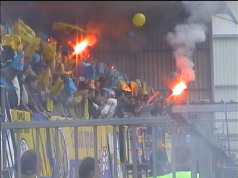
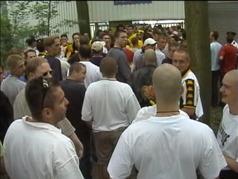
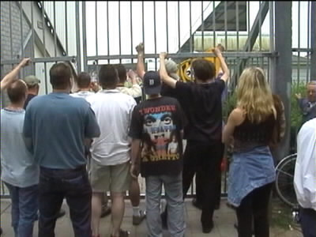
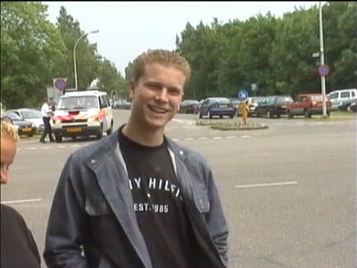

|
RKC - Roda JC 3-2 26 mei 2001 (deel 1) |

In Nederweert hielden de FP-bussen een pauze en maakten
hier een praatje met de "zelfrijders zonder kaartje".

Feestsigaar voor het geval dat.....

We kwamen de file door op de klanken van Rammstein,
Toten Hosen en TuPac.

Er waren geen opengebroken straten in Waalwijk en evenmin
was er een politie-fuik. Maar de file vertraagde enorm waar-
door we nog maar net het openingsvuurwerk konden zien.

De FP-gasten moesten op dat moment nog zeker 5 minuten
wachten eer de poort openging. Er werd ook nog een minuut
stilte in acht genomen vanwege het overlijden van NAC-speler
Ferry van Vliet.

Het lukte een aantal mensen om zonder kaartje binnen te
komen.

Maar de meesten hadden pech. Smeekbedes om ons binnen
te laten haalden niks uit.

Na wat heen-en-weer gewandel kwam een zekere Stefan
van K-otic (Starmaker) naar ons toe om te vragen of hij ook
eens met Roda-supporters een liedje mocht zingen.

Dat vonden we goed, maar Stefan zong erg binnensmonds!

Toen Garba Lawal scoorde kwam er opeens een groepje
opgefokte Waalwijkers op de poort afgestormen. Die met
het witte shirt had bijna mijn camera te grazen.

En toen scoorde Garba weer.......!

Het obligate bedankje van de spelers.

Een gedeelte van de 460 Roda-supporters.

Het "spectaculaire" vuurwerk.

Op de terugweg lukte het ons niet meer aan te klampen bij
de bussen waarna we in het plaatsje Horn bij een Egyptenaar
Studio Sport gingen kijken.
EUROPE HERE WE COME ! (again)
©KPD